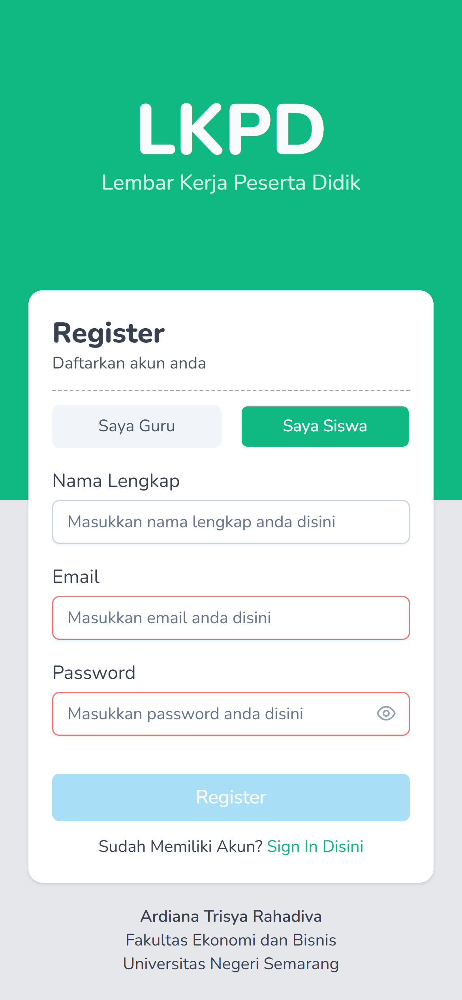
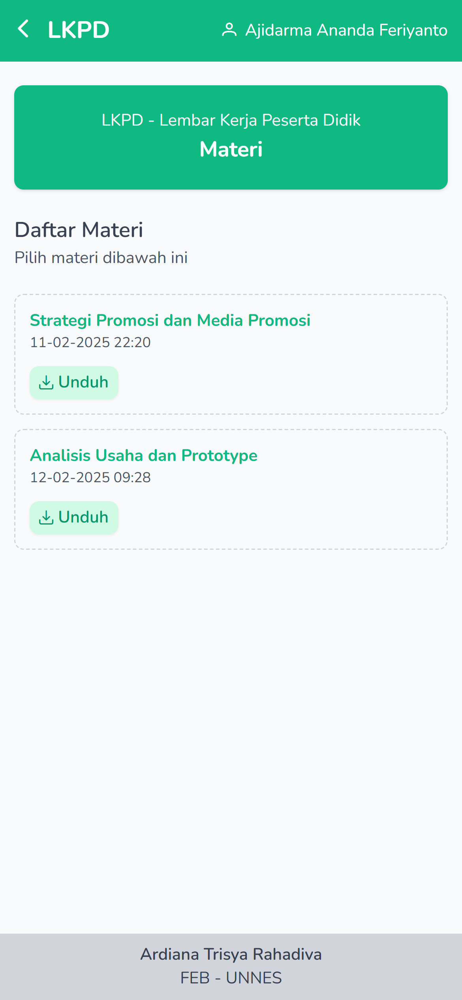
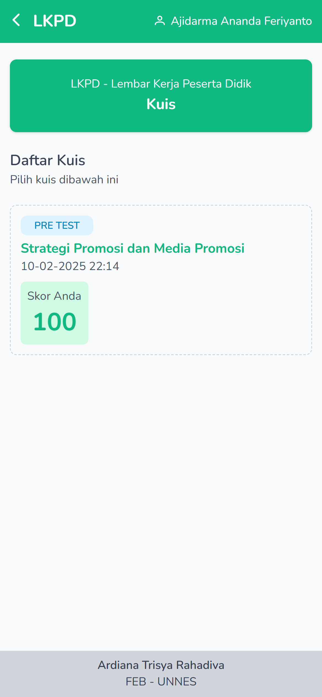
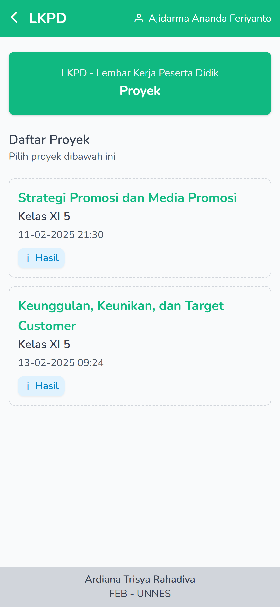
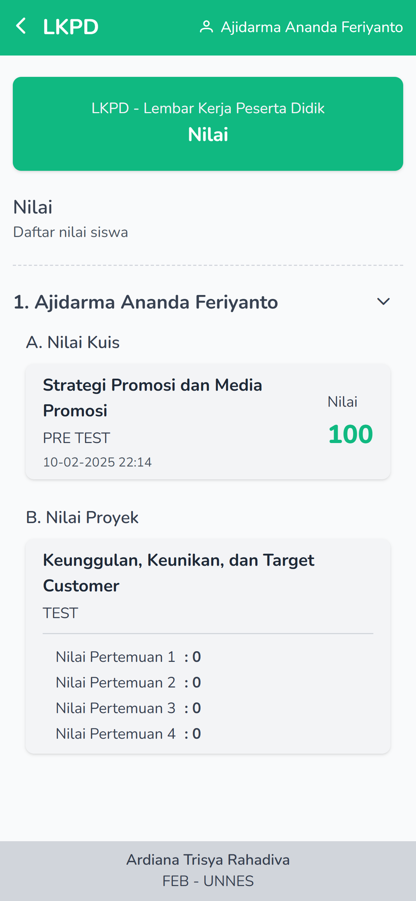
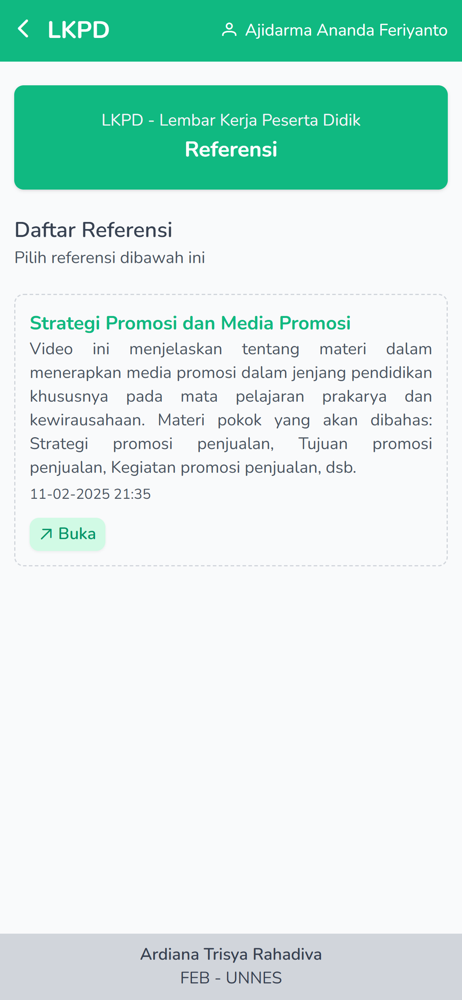

LKPD - Lembar Kerja Peserta Didik
Profile
Edit Profile
Edit data informasi profile
Nama Lengkap *
NIP *
No. Absen *
Email *
Password *
Petunjuk Penggunaan
Berikut ini beberapa panduan yang harus diketahui pengguna dalam menggunakan aplikasi LKPD Mobile:
REGISTRASI
Sebelum menggunakan aplikasi, pengguna diharapkaan melakukan regisgtrasi terlebih dahulu agar data pengguna dapat tersimpan dalam database. Registrasi pengguna dapat dilakukan dengan cara sebagai berikut:
- Klik tombol ‘REGISTRASI’ yang terdapat pada halaman login
- Isilah data diri pada kolom yang tersedia
- Saat mengisi data diri, diusahakan sesuai dengan petunjuk yang terdapat pada kolom
- Setelah itu klik tombol ‘Registrasi’
- Pendaftaran berhasil apabila terdapat kalimat ‘Registrasi Berhasil’ dan beralih kembali pada halaman login
LOGIN

Login akun hanya dapat dilakukan setelah melakukan ‘REGISTRASI’. Login dapat dilakukan dengan memasukkan ‘Email Pengguna’ dan ‘Kata Sandi’ yang telah terdaftar.
MENU MATERI
Fitur ‘materi’ dapat diakses oleh guru dan siswa. fitur ini merupakan materi yang diberikan oleh guru dan dapat diakses oleh siswa untuk mempelajari materi
MENU KUIS
Fitur ‘kuis’ dapat diakses oleh guru dan siswa. fitur ini berisi kuis pretest (dikerjakan sebelum memulai pembelajaran) dan kuis postest (dikerjakan setelah pembelajaran). Adapun tatacara mengerjakan kuis untuk siswa, sebagai berikut:
- Klik tombol ‘Kuis’ pada halaman menu
- Pilih kuis sesuai arahan dari guru, baik mengerjakan kuis pretest maupun postest
- Kuis dikerjakan dengan waktu yang telah ditentukan
- Kuis pilihan ganda berisi 5 soal baik pretest maupun postest
- Kuis hanya bisa dikerjakan dalam sekali pengerjaan dan tidak bisa diulang kembali
- Setelah selesai mengerjakan kuis, otomatis akan ada skor pengerjaan sesuai dengan kemampuan pengerjaan siswa
MENU PROYEK
Fitur ‘Proyek’ dikhususkan untuk SISWA. Fitur ini merupakan fitur utama dari LKPD Mobile. Adapun tatacara menggunakan fitur proyek sebagai berikut:
- Klik tombol ‘Proyek’ pada halaman menu
- Pilih proyek yang akan dikerjakan, kemudian akan terlihat tampilan dokumen LKPD yang sudah dibuat oleh guru
- Setelah memilih proyek sesuai dengan materi, siswa dapat dikerjakan dengan teman sekelompok
- Siswa yang mengerjakan wajib klik fitur simpan untuk memastikan pengerjaan sudah disimpan, dan dapat dilanjutkan pengerjaan dengan teman yang lain
- Proyek yang sudah selesai dikerjakan dapat diunduh melalui tombol yang sudah disediakan
- File proyek yang sudah diunduh akan otomatis tersimpan secara PDF
MENU NILAI
Fitur ‘Nilai’ dapat diakses untuk guru dan siswa. Fitur ini merupakan fitur yang digunakan untuk melihat hasil pengerjaan dari kuis dan proyek masing-masing siswa. Daftar nilai siswa yang dikerjakan, akan terlihat skor kuis pretest dan postest dengan waktu pengerjaan sesuai dengan kemampuan siswa, dan daftar nilai proyek akan terlihat sesuai dengan pengerjaan siswa dalam setiap pertemuan pertama hingga keempat.
MENU REFERENSI
Fitur ‘Referensi’ dapat diakses oleh guru dan siswa. Fitur ini merupakan fitur yang digunakan untuk melihat referensi video yang sesuai dengan materi pembelajaran. Guru akan memberikan link yang disediakan dalam aplikasi, kemudian siswa klik tombol pada link tersebut selanjutnya akan terbuka secara otomatis pada link yang diberikan, seperti link Youtube.
PROFILE PENGGUNA

Fitur ini untuk menampilkan data pengguna, selain itu terdapat pula tombol panduan pengguna, tentang aplikasi, dan tombol keluar aplikasi.
Tentang Aplikasi
Tentang aplikasi LKPD Mobile
Aplikasi ini dirancang dan dikembangkan untuk memfasilitasi siswa dalam mendukung proses
pembelajaran di kelas.
Aplikasi ini dirujukkan untuk guru dan siswa SMA pada mata pelajaran Prakarya dan Kewirausahaan.
Namun, aplikasi versi pertama yang dikembangkan baru sebatas materi yang akan dipelajari.
Fitur
Fitur Utama LKPD Mobile
Pertama, fitur ‘Unggah Materi, Proyek, Kuis, dan Referensi’. Fitur ini ditunjukkan kepada guru dapat mengunggah file materi pembelajaran dalam bentuk PPT atau PDF, proyek dapat dilakukan dengan ketik manual melalui aplikasi, kuis juga dilakukan oleh guru dengan memberikan Latihan soal, dan guru dapat mengunggah referensi dalam bentuk link yang dapat mendukung dalam proses pembelajaran.
Kedua, fitur ‘Materi, Proyek, Kuis, dan Referensi’. Fitur yang digunakan oleh siswa dapat mengakses materi dengan bentuk file PPT atau PDF, proyek yang telah dikerjakan dapat dikerjakan secara bersamaan oleh teman sekelompok, kuis dapat dikerjakan oleh siswa secara individu dan referensi dapat diakses pada link yang telah diberikan oleh guru.
Identitas Pengembang
Nama Pengembang
Ardiana Trisya Rahadiva
Email Pengembang
ardianatrisyar@students.unnes.ac.id
Instansi
Fakultas Ekonomika dan Bisnis, Universitas Negeri Semarang.
{{ Version }}